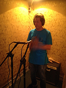
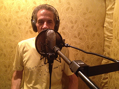

INFO: FUNCIÓN | INTEGRANTES | TARIFAS | DISTRIBUCIÓN
| RIDER |
I N I C I O
AÑOS: 2005 - 09 | 2010 | 2011 | 2012 | 2013 | 2014 | 2015 | 2016 | 2017 |
 C O N C I E R T O
S & A C T I V I D A D E
S
C O N C I E R T O
S & A C T I V I D A D E
S
2 0 1 8 (9)
I N I C I O
AÑOS: 2005 - 09 | 2010 | 2011 | 2012 | 2013 | 2014 | 2015 | 2016 | 2017 |
2 0 1 8 (9)
Enero
Febrero
Marzo
Abril
Mayo
Junio
Julio

Miércoles, 10-01-2018, 5 pm (Emilio)
Concierto en el velorio de mi Tía Mayayo Guardia, Funeraria Vallés, Caracas.
Sábado, 20-01-2018, 11 pm (Cuarteto: Marcy, Lizardo, Pedro, Emilio)
Concierto en la Peña Musical, Casa de los Peña, El Sitio, San Antonio de los Altos.

Febrero
Sábado, 24-02-2018, 10 pm (Dúo: Pedro, Emilio y dos invitados en la maracas y en las congas)
Concierto en la Peña Musical, Casa de Flor, Urb. La Suiza, San Antonio de los Altos.

Todo el mes de febrero, 2018 (Jesús Enrique Torres (ingeniero), Lizardo, Emilio)
Grabación de las Maracas y otros idiófonos en Estudios Edén, Los Picachos, San Antonio de los Altos.

Marzo

Todo el mes de marzo, 2018 (Jesús Enrique Torres (ingeniero), Lizardo, Emilio)
Grabación de las Maracas y otros idiófonos en Estudios Edén, Los Picachos, San Antonio de los Altos.
Abril


Todo el mes de abril, 2018 (Jesús Enrique Torres (ingeniero), Manuel, Emilio)
Grabación del bajo en Estudios Edén, Los Picachos, San Antonio de los Altos.
Mayo

Todo el mes de mayo, 2018 (Jesús Enrique Torres (ingeniero), Manuel, Emilio)
Grabación del bajo y del sitar en Estudios Edén, Los Picachos, San Antonio de los Altos.

Junio

Todo el mes de junio, 2018 (Jesús Enrique Torres (ingeniero), Emilio)
Grabación de armónicos vocales, edición y mezcla en Estudios Edén, Los Picachos, San Antonio de los Altos.
Julio
Domingo, 15-07-2018 (Emilio). Muestra del video "Una Visión de mi Entorno II", de Mardonio Díaz con Evolución del CD NATURA, muestra de los dos videos de Ozono Jazz por Wladimir Rancho Pérez, Encanto y Canción de Cuna.
Cierre de la exposición colectiva "Entre Montañas", Sala Pedro León Zapata, Complejo Cultural, San Antonio de los Altos.
Sábado, 28-07-2018, 4 pm (Cuarteto: Pedro, Churro, Lizardo, Emilio)
Concierto en el evento "Tres Miradas a Caracas - reFLORESTAndo", de la asociación Caracas City 450, Ave. Juan Pernalete, Altamira Sur, Caracas.

{kind=link}